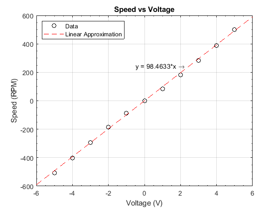
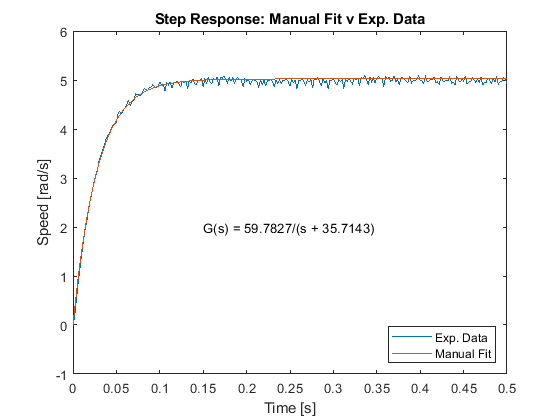
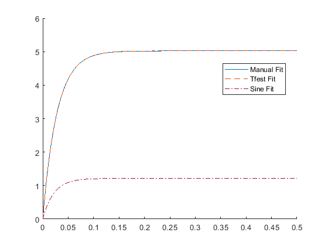
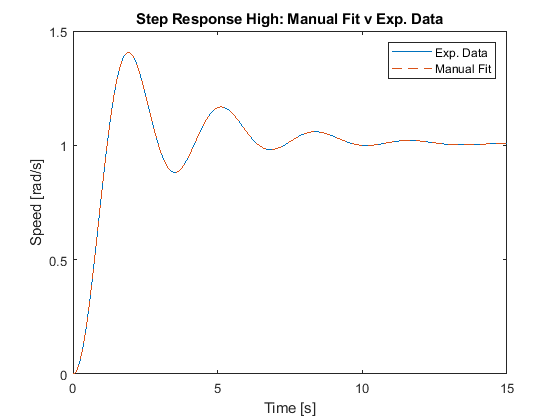

AER 509 Control Systems
Lab 2 - Introduction to System Identification
Darby Songolo - 500873785
Daniel Brown - 500889023
Contents
Introduction
The purpose of this laboratory experiment was to create and analyze
several mathematical models of responses given by the Quanser QUBE-Servo
2 system. System identification was be preformed through implementing both
manual, and MATLAB toolbox driven methods. In Part A, a linear curve fit
was created to model voltage and speed data for the device. In Part B, systems
identification was used to create first order models for step and sine
input data. Using a similar methodology, Part C required the implementation of
higher order transfer functions to represent a merged system of 2 sets of signal data.
Matlab Exercises - Part A - 1: Curve Fitting
load('Lab2partb_data.mat');
load('Data_voltage.mat');
voltage = Data.V;
speeds = Data.S;
fT = fittype({'x'});
lin_fit = fit(voltage,speeds,fT);
lin_fit_data = lin_fit.a.*speeds;
plot(voltage,speeds,'ko',speeds,lin_fit_data,'r--');
legend('Data','Linear Approximation','Location','northwest');
xlabel('Voltage (V)'); ylabel('Speed (RPM)');
title('Speed vs Voltage');
axis([-6 6 -600 600]);
grid on;
text(-0.5,246.16,['y = ' num2str(lin_fit.a) '*x \rightarrow']);
set(gca,'XMinorTick','on','YMinorTick','on');

Matlab Exercises - Part A - 2: Analysis of Results
There were no regions of non-linearity in the experimental data.
Matlab Exercises - Part B - 1: Data Load and Variables
load('Lab2partb_data.mat')
v_step = Data.v_step;
t_step = step_data.time;
u_step = step_data.signals.values(:,1);
y_step = step_data.signals.values(:,2);
t_sine = sine_data.time;
u_sine = sine_data.signals.values(:,1);
y_sine = sine_data.signals.values(:,2);
Matlab Exercises - Part B - 2: System Parameters and Transfer Function
mean_steady = mean(y_step(270:end));
sixthree_step = 0.63*mean_steady;
recip_a = interp1(y_step(230:257,1),t_step(230:257,1)-1,sixthree_step);
a = 1/recip_a;
a = 1./(t_step((sixthree_step*0.98<y_step & y_step<sixthree_step*1.02))-1);
k = a*mean_steady/v_step;
sys_manual = tf(k,[1 a]);
t_step_new = (0:0.002:0.5)';
y_step_fit = step(v_step*sys_manual,t_step_new);
Matlab Exercises - Part B - 3: Manual Fit versus Exp. Data
figure
plot(t_step_new,y_step(230:480,1),t_step_new,y_step_fit)
title('Step Response: Manual Fit v Exp. Data');
ylabel('Speed [rad/s]');
xlabel('Time [s]');
text(0.15,2,['G(s) = ',num2str(k),'/(s + ',num2str(a),')']);
legend('Exp. Data','Manual Fit','Location','southeast');

Matlab Exercises - Part B - 4: Using the System Identification Toolbox
step_id = iddata(y_step,u_step,0.002);
id_step = tfest(step_id,1);
sys_step = tf(id_step.num,id_step.den);
sine_id = iddata(y_sine,u_sine,0.002);
id_sine = tfest(sine_id,1);
sys_sine = tf(id_sine.num,id_sine.den);
Matlab Exercises - Part B - 5: Transfer Function Comparison
sys_manual
sys_step
sys_sine
sys_manual =
59.78
---------
s + 35.71
Continuous-time transfer function.
sys_step =
59.9
---------
s + 35.78
Continuous-time transfer function.
sys_sine =
55.93
---------
s + 46.05
Continuous-time transfer function.
figure
hold on
plot(t_step_new,y_step_fit)
y_step_tfest = step(v_step*sys_step,t_step_new);
plot(t_step_new,y_step_tfest,'--','Color','#D95319');
y_sine_tfest = step(sys_sine,t_step_new);
plot(t_step_new, y_sine_tfest,'-.','Color','#A2142F');
legend('Manual Fit','Tfest Fit','Sine Fit','Location','Best');
hold off
snapnow;
close all

The "a" and "k" parameters for the two transfer functions based off of
the step input were within 0.2% of each other, respectively. As such,
the manual fit for the response was very acurate. The transfer function
for the sine response was not easily comparable with the step response
transfer functions. First-order systems are not well suited for modelling
responses that have large non-settling oscillations. Upon analysis, the
sine transfer function failed to accurately represent the response. A
higher-order system would be better suited for modelling this response
In order to improve the parameter estimation for the manual fit, a
more accurate selection for the steady state region of the response
could be chosen. This would mean a more accurate mean steady state
value. The transfer function is unitless. One reason for using a step
input to test the response of an unknown system is that it is the
simplest type of input to generate. A second reason is that using a step
input allows for the easiest measurement of the systems response.
Matlab Exercises - Part C - Higher Order Model Identification
load('PartB_sine_high');
load('PartB_step_high');
v_step = Data.v_step;
t_step_high = step_data_high.time;
u_step_high = step_data_high.signals.values(:,1);
y_step_high = step_data_high.signals.values(:,2);
t_sine_high = sine_data_high.time;
u_sine_high = sine_data_high.signals.values(:,1);
y_sine_high = sine_data_high.signals.values(:,2);
dt_high=0.002;
step_id_high = iddata(y_step_high,u_step_high,dt_high);
sine_id_high = iddata(y_sine_high,u_sine_high,dt_high);
merge_id_high = merge(step_id_high,sine_id_high);
id_step_merge = tfest(merge_id_high,4)
id_step_merge =
From input "u1" to output "y1":
-0.001999 s^3 + 1.994 s^2 + 5.007 s + 1.002
---------------------------------------------
s^4 + 1.994 s^3 + 4.995 s^2 + 5.006 s + 1.002
Continuous-time identified transfer function.
Parameterization:
Number of poles: 4 Number of zeros: 3
Number of free coefficients: 8
Use "tfdata", "getpvec", "getcov" for parameters and their uncertainties.
Status:
Estimated using TFEST on time domain data "merge_id_high".
Fit to estimation data: [100 100]%
FPE: 3.08e-29, MSE: [4.061e-29 2.089e-29]
[num_roots,demom_roots] = tfdata(id_step_merge,'v')
t_step_high_new = (0:dt_high:15)';
y_step_high_fit = step(id_step_merge,t_step_high_new);
plot(t_step_high_new,y_step_high(501:8001),t_step_high_new,y_step_high_fit,'--')
legend('Exp. Data', 'Manual Fit');
title('Step Response High: Manual Fit v Exp. Data');
xlabel('Time [s]');
ylabel('Speed [rad/s]');
num_roots =
0 -0.0020 1.9940 5.0070 1.0020
demom_roots =
1.0000 1.9940 4.9950 5.0060 1.0020

Conclusion
Through this laboratory experiment, familiarity was gained with the Systems Identification capabilities and
toolboxes of MATLAB. The forms of analysis conducted included curve fitting, and first order and higher order
transfer function generation. Each of these models were found to create accurate mathematical representations of
the Quanser QUBE-Servo 2 system and its behaviour.